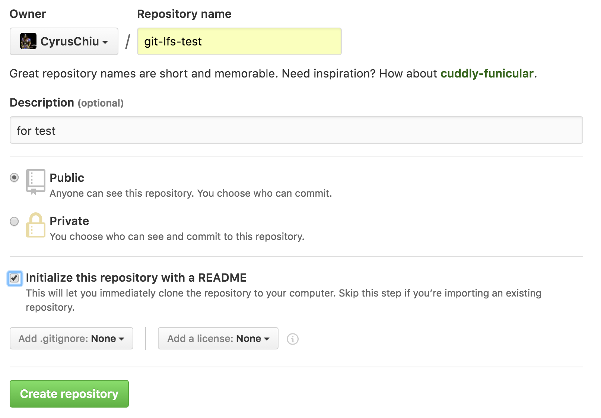
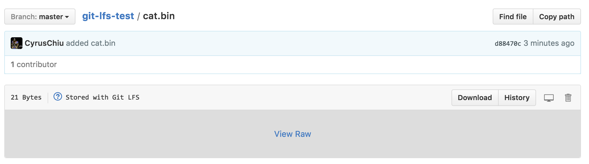
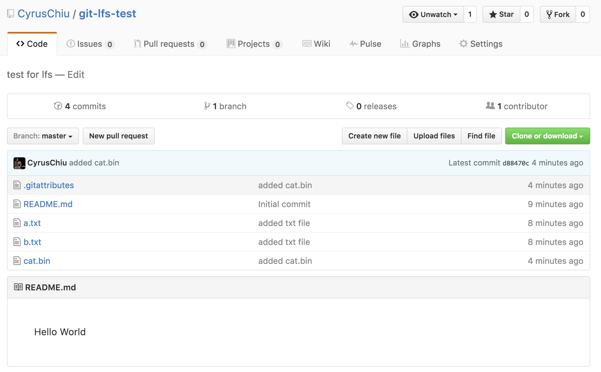
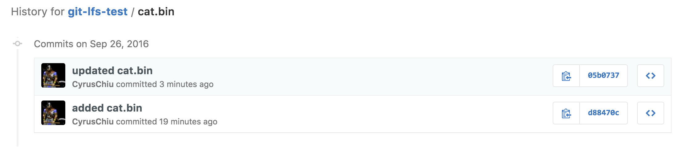
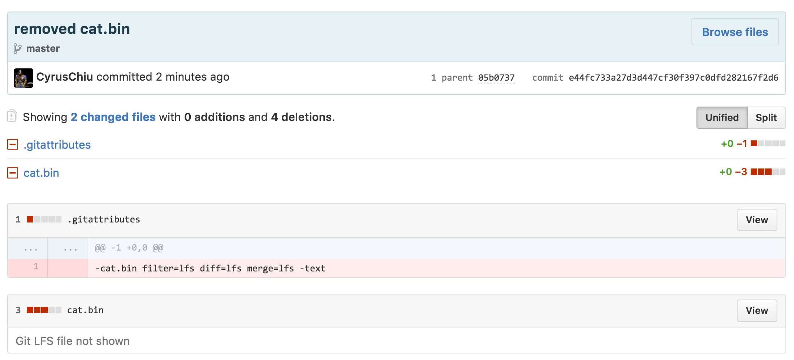
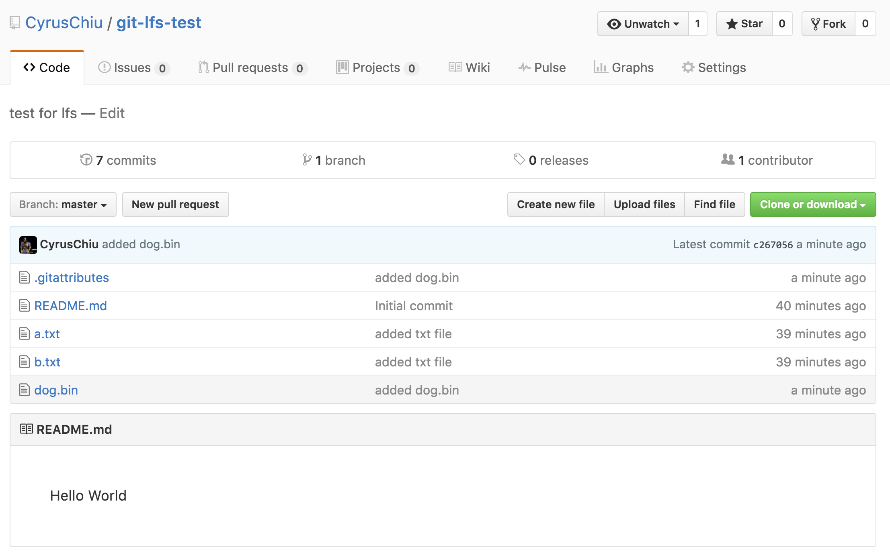

這篇文章會提到：
- git lfs 基本功能教學
- 安裝 git lfs （Large File Storage）工具
- 在 github repo 上新增一個大型（>100MB）檔案
- 新增/修改/刪除 這些檔案
一個 machine learning 的專案難免會有些比較大的 model 檔案，但是 github 無法幫我們管理超過 100MB 的檔案，這時候我們必須另外找空間存放這些大型檔案。如果後續要在另外一台機器 clone 這一個 repo 下來執行的時候，也要去另外的空間把大型檔案都抓回來才有辦法開始執行，相當麻煩
Git Large File Storage 可以幫我們解決這個問題。我們可以使用 git lfs 在同一個 repo 底下新增大型檔案，並對該檔案作版本控制，目前免費的流量是 1GB / month，用了這個之後就不會再看到檔案過大的錯誤訊息了
|
安裝 git LFS
|
在 repo 裡面新增一個大型檔案
我們創建一個練習用的 repo
將這個 repo clone 回 localhost 上
新增 README，並 commit
$ echo Hello World > README.md$ git add README.md$ git commit -m "Initial commit"在資料夾底下新增檔案
$ echo hello a > a.txt$ echo hello b > b.txt$ git add a.txt b.txt$ git commit -m "added txt file"這樣的動作會新增兩個內容分別是
hello a的a.txt，以及內容是hello b的b.txt新增一個 .bin 檔案，模擬大型檔案
$ echo this is a large file > cat.bin開始用 git 管理上面新增的 3 個檔案，要注意的是這邊跟的是檔名
cat.bin而非路徑./cat.bin$ git lfs track 'cat.bin'>>> Tracking cat.bin直接下不帶參數的指令可以看到目前所有 tracked 的大型檔案
$ git lfs track>>> Listing tracked pathscat.bin (.gitattributes)管理
.gitattributes檔案與cat.bin$ git add .gitattributes$ git add cat.bin$ git commit -m "added cat.bin"查看狀態與 push
$ git lfs ls-files>>> f4ddae8469 * cat.bin$ git push可以看到
cat.bin是以 LFS 的格式儲存
並且所有的檔案都已經 push 上去了

修改檔案內容
這邊我們把cat.bin 的內容從
|
變成
|
執行下列指令：
|
執行完成可以看到 cat.bin 已經被修改過了
以及 cat.bin 的修改歷程

檔案的新增與刪除
現在刪除cat.bin 並新增 dog.bin
|
下圖是執行完後的結果，cat.bin已被刪除

新增 dog.bin
|
結果如圖

基本功能介紹的差不多了，有興趣的話可以到 官方Tutorial 看個仔細，或是看看別人寫的一些 tips